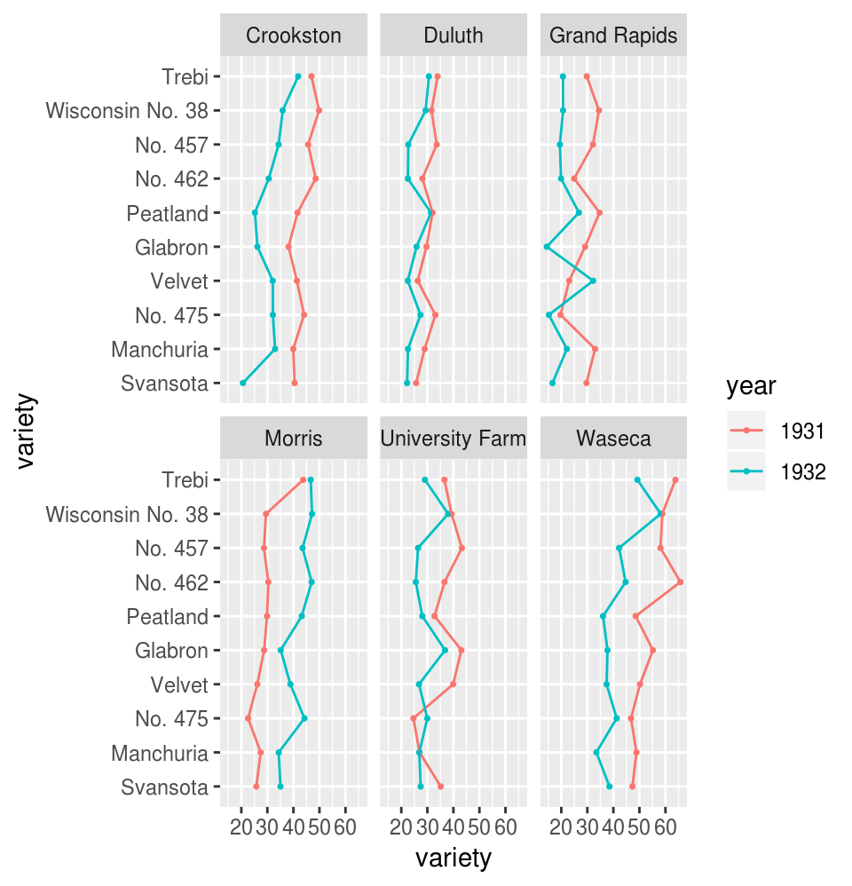

1.1 Introducción
La visualización de datos no trata de hacer gráficas “bonitas” o “divertidas”, ni de simplificar lo complejo o ayudar a una persona “que no entiende mucho” a entender ideas complejas. Más bien, trata de aprovechar nuestra gran capacidad de procesamiento visual para exhibir de manera clara aspectos importantes de los datos.
El siguiente ejemplo de (Tufte 2006), ilustra claramente la diferencia entre estos dos enfoques. A la izquierda están gráficas (más o menos típicas de Powerpoint) basadas en la filosofía de simplificar, de intentar no “ahogar” al lector con datos. El resultado es una colección incoherente, de bajo contenido, que no tiene mucho qué decir y que es, “indeferente al contenido y la evidencia”. A la derecha está una variación del rediseño de Tufte en forma de tabla, que en este caso particular es una manera eficiente de mostrar claramente los patrones que hay en este conjunto simple de datos.
¿Qué principios son los que soportan la efectividad de esta tabla sobre la gráfica de la derecha? Veremos que hay dos conjuntos de principios importantes: unos relacionados con el diseño y otros con la naturaleza del análisis de datos, independientemente del método de visualización.

Visualización de datos en la estadística
La estadística tradicionalmente se divide en dos partes: una parte de naturaleza exploratoria, donde jugamos el papel de detectives en búsqueda de los elementos de evidencia importante, y una parte de naturaleza inferencial, donde nos convertimos en jueces donde le damos pesos de credibilidad a la evidencia que presenta el detective. Estas dos partes tienen interacción fuerte en la práctica, pero por razones históricas se considera “superior” a la parte inferencial por encima de la exploratoria.
Aunque en el proceso de inferencia las gráficas cada vez son más importantes, la visualización entra más claramente dentro del análisis exploratorio de datos. Y como en un principio no es claro como la visualización aporta al proceso de la inferencia, se le consideró por mucho tiempo como un área de poca importancia para la estadística: una herramienta que en todo caso sirve para comunicar ideas simples, de manera deficiente, y a personas poco sofisticadas.

El peor lado de este punto de vista consiste en restringirse a el análisis estadístico rutinario Cleveland (1993): aplicar las recetas y negarse a ver los datos de distinta manera (¡incluso pensar que esto puede sesgar los resultados, o que nos podría engañar!). El siguiente ejemplo muestra un caso grave y real (no simulado) de este análisis estadístico rutinario (tomado de Cleveland (1994)).
A la derecha mostramos los resultados de un experimento de agricultura. Se cultivaron diez variedades de cebada en seis sitios de Minnesota, en 1921 y 1932. Este es uno de los primeros ejemplos en el que se aplicaron las ideas de Fisher en cuanto a diseño de experimentos.
Estos datos fueron reanalizados desde esa época por muchos agrónomos. Hasta muy recientemente se detectó la anomalía en el comportamiento de los años en el sitio Morris, el cual es evidente en la gráfica. Investigación posterior ha mostrado convincentemente que en algún momento alguien volteó las etiquetas de los años en este sitio.
Este ejemplo muestra, en primer lugar, que la visualización es crucial en el proceso de análisis de datos: sin ella estamos expuestos a no encontrar aspectos importantes de los datos (errores) que deben ser discutidos - aún cuando nuestra receta de análisis no considere estos aspectos. Ninguna receta puede aproximarse a describir todas las complejidades y detalles en un conjunto de datos de tamaño razonable (este ejemplo, en realidad, es chico). Sin embargo, la visualización de datos, por su enfoque menos estructurado, y el hecho de que se apoya en un medio con un “ancho de banda” mayor al que puede producir un cierto número de cantidades resumen, es ideal para investigar estos aspectos y detalles.
Visualización popular de datos
Publicaciones populares (periódicos, revistas, sitios internet) muchas veces incluyen visualización de datos como parte de sus artículos o reportajes. En general siguen el mismo patrón que en la visión tradicionalista de la estadística: sirven más para divertir que para explicar, tienden a explicar ideas simples y conjuntos chicos de datos, y se consideran como una “ayuda” para los “lectores menos sofisticados”. Casi siempre se trata de gráficas triviales (muchas veces con errores graves) que no aportan mucho a artículos que tienen un nivel de complejidad mucho mayor (es la filosofía: lo escrito para el adulto, lo graficado para el niño).

Referencias
Tufte, Edward R. 2006. Beautiful Evidence. Cheshire, CT: Graphics Press.
Cleveland, W.S. 1993. Visualizing Data. At&T Bell Laboratories. https://books.google.com.mx/books?id=V-dQAAAAMAAJ.
Cleveland, W.S. 1993. Visualizing Data. At&T Bell Laboratories. https://books.google.com.mx/books?id=V-dQAAAAMAAJ.
1994. The Elements of Graphing Data. AT&T Bell Laboratories. https://books.google.com.mx/books?id=KMsZAQAAIAAJ.